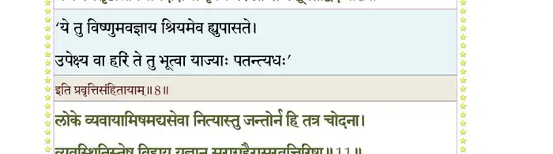
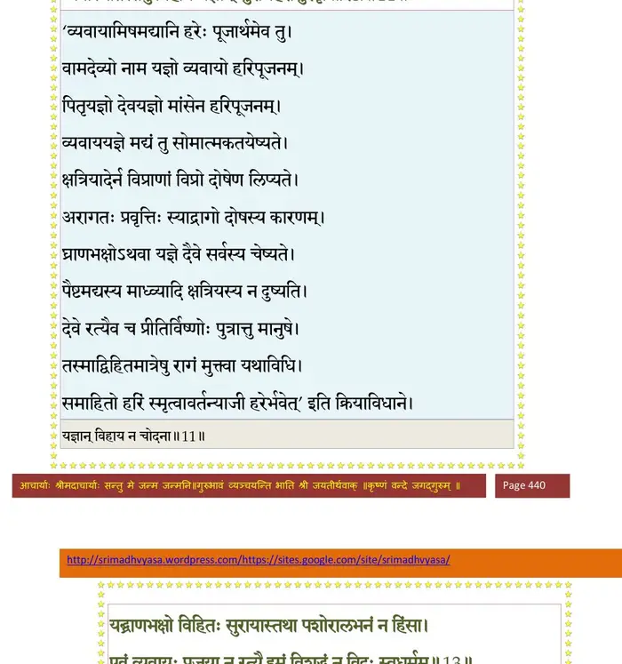
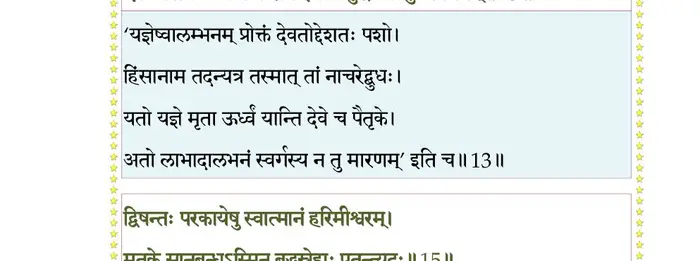
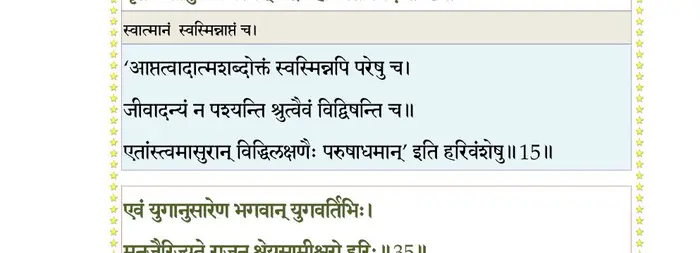
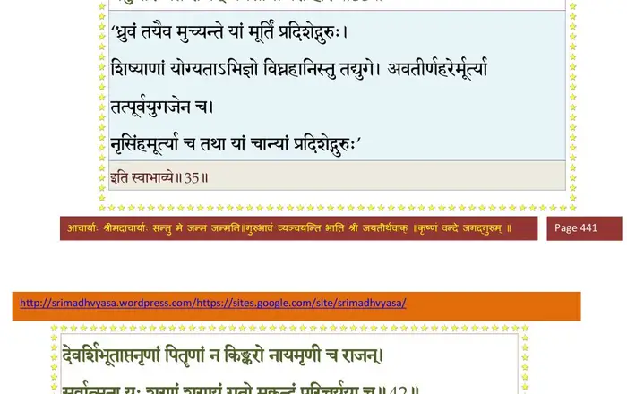
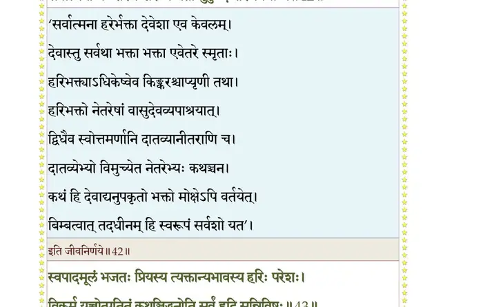
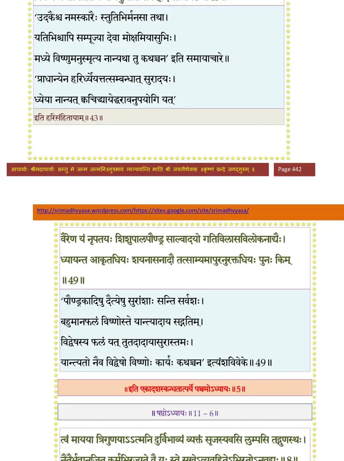

स्कन्ध 11 · अध्याय 5
श्लोक १
राजोवाच–
भगवन्तं हरिं प्रायो न भजन्त्यात्मवित्तमाः ।
तेषामशान्तकामानां का निष्ठाऽविजितात्मनाम्।। १ ।।
भगवन्तं हरिं प्रायो न भजन्त्यात्मवित्तमाः ।
तेषामशान्तकामानां का निष्ठाऽविजितात्मनाम्।। १ ।।
श्लोक २
चमस उवाच–
मुखबाहूरुपादेभ्यः पुरुषस्याश्रमैः सह ।
चत्वारो जज्ञिरे वर्णा गुणैर्विप्रादयः पृथक्।। २ ।।
मुखबाहूरुपादेभ्यः पुरुषस्याश्रमैः सह ।
चत्वारो जज्ञिरे वर्णा गुणैर्विप्रादयः पृथक्।। २ ।।
श्लोक ३
य एषां पुरुषं साक्षादात्मप्रभवमीश्वरम् ।
न भजन्त्यवजानन्ति स्थानभ्रष्टाः पतन्त्यधः।। ३ ।।
न भजन्त्यवजानन्ति स्थानभ्रष्टाः पतन्त्यधः।। ३ ।।
श्लोक ४
दूरे हरिकथाः केचिद् दूरे चाच्युतकीर्तनाः ।
स्त्रियः शूद्रादयश्चैव तेऽनुकम्प्या भवादृशाम्।। ४ ।।
स्त्रियः शूद्रादयश्चैव तेऽनुकम्प्या भवादृशाम्।। ४ ।।
श्लोक ५
विप्रो राजन्यवैश्यौ च हरेः प्राप्ताः पदान्तिकम् ।
श्रौतेन जन्मना वाऽपि मुह्यन्त्याम्नायवादिनः।। ५ ।।
श्रौतेन जन्मना वाऽपि मुह्यन्त्याम्नायवादिनः।। ५ ।।
श्लोक ६
कर्मण्यकोविदाः स्तब्धा मूर्खाः पण्डितमानिनः ।
वदन्ति चाटुकान् मूढा यया माध्व्या गिरोत्सुकाः।। ६ ।।
वदन्ति चाटुकान् मूढा यया माध्व्या गिरोत्सुकाः।। ६ ।।
श्लोक ७
रजसा घोरसंकल्पाः कामुका अभिमन्यवः ।
दाम्भिका मानिनः पापा विहसन्त्यच्युतप्रियान्।। ७ ।।
दाम्भिका मानिनः पापा विहसन्त्यच्युतप्रियान्।। ७ ।।
श्लोक ८
वदन्ति तेऽन्योन्यमुपासितश्रियो गृहेषु मैथुन्यपरेषु चाशिषः ।
यजन्त्यसृष्टान्नविधानदक्षिणा वृत्त्यै परं घ्नन्ति पशूनतद्विदः।। ८ ।।
यजन्त्यसृष्टान्नविधानदक्षिणा वृत्त्यै परं घ्नन्ति पशूनतद्विदः।। ८ ।।
भागवततात्पर्यनिर्णय

श्लोक ९
श्रिया विभूत्याऽभिजनेन विद्यया त्यागेन रूपेण बलेन कर्मणा ।
जातस्मयेनान्धधियः सहेश्वरान् सतोऽवमन्यन्ति हरिप्रियान् खलाः ।। ९ ।।
जातस्मयेनान्धधियः सहेश्वरान् सतोऽवमन्यन्ति हरिप्रियान् खलाः ।। ९ ।।
श्लोक १०
सर्वेषु शश्वत् तनुभृत्स्ववस्थितं यथा स्वमात्मानमभीष्टमीश्वरम् ।
वेदोपगीतं च न शृण्वतेऽबुधा मनोरथानां प्रवदन्ति वार्तया ।। १० ।।
वेदोपगीतं च न शृण्वतेऽबुधा मनोरथानां प्रवदन्ति वार्तया ।। १० ।।
श्लोक ११
लोके व्यवायामिषमद्यसेवा नित्यास्तु जन्तोर्न हि तत्र चोदना ।
व्यवस्थितिस्तेषु विहाय यज्ञान् सुराग्रहैरासुरवृत्तिरिष्टा।। ११ ।।
व्यवस्थितिस्तेषु विहाय यज्ञान् सुराग्रहैरासुरवृत्तिरिष्टा।। ११ ।।
भागवततात्पर्यनिर्णय

श्लोक १२
धनं हि धर्मैकफलं यतोऽस्य ज्ञानं सविज्ञानमनुप्रशान्तिः ।
गृहेषु युञ्जन्ति कलेवरस्य मृत्युं न पश्यन्ति दुरन्तवीर्यम्।। १२ ।।
गृहेषु युञ्जन्ति कलेवरस्य मृत्युं न पश्यन्ति दुरन्तवीर्यम्।। १२ ।।
श्लोक १३
यद् घ्राणभक्षो विहितः सुरायाः तथा पशोरालभनं न हिंसा ।
एवं व्यवायः प्रजया न रत्यै इमं विशुद्धं न विदुः स्वधर्मम्।।१३।।
एवं व्यवायः प्रजया न रत्यै इमं विशुद्धं न विदुः स्वधर्मम्।।१३।।
भागवततात्पर्यनिर्णय

श्लोक १४
ये त्वनेवंविदोऽसन्ततथा सद(सि)भिमानिनः ।
पशून् द्रुह्यन्ति विस्रब्धान् प्रेत्य खादन्ति ते च तान्।। १४ ।।
पशून् द्रुह्यन्ति विस्रब्धान् प्रेत्य खादन्ति ते च तान्।। १४ ।।
श्लोक १५
द्विषन्तः परकायेषु स्वात्मानं हरिमीश्वरम् ।
मृतके सानुबन्धेऽस्मिन् बद्धस्नेहाः पतन्त्यधः।। १५ ।।
मृतके सानुबन्धेऽस्मिन् बद्धस्नेहाः पतन्त्यधः।। १५ ।।
भागवततात्पर्यनिर्णय

श्लोक १६
यं (ये) कैवल्यमसम्प्राप्ता ये चातीताश्च मूढताम् ।
त्रैवर्गिकाभिजन्मानमात्मानं पा(घा)तयन्ति ते।। १६ ।।
त्रैवर्गिकाभिजन्मानमात्मानं पा(घा)तयन्ति ते।। १६ ।।
श्लोक १७
ये तत्रात्महनोऽशान्ता अज्ञाने ज्ञानमानिनः ।
सीदन्त्यकृतकृत्या वै कालध्वस्तमनोरथाः।। १७ ।।
सीदन्त्यकृतकृत्या वै कालध्वस्तमनोरथाः।। १७ ।।
श्लोक १८
हित्वाऽत्यायासरचितगृहापत्यसुहृच्छ्रियः ।
तमो विशन्त्यनुच्छ्वासं वासुदेवपराङ्मुखाः।। १८ ।।
तमो विशन्त्यनुच्छ्वासं वासुदेवपराङ्मुखाः।। १८ ।।
श्लोक १९
राजोवाच–
कस्मिन् काले स भगवान् किंवर्णः कीदृशो नृभिः ।
नाम्ना वा केन विधिना पूज्यते तदिहोच्यताम्।। १९ ।।
कस्मिन् काले स भगवान् किंवर्णः कीदृशो नृभिः ।
नाम्ना वा केन विधिना पूज्यते तदिहोच्यताम्।। १९ ।।
श्लोक २०
करभाजन उवाच–
कृतं त्रेता द्वापरं च कलिरित्येषु केशवः ।
नानावर्णाभिधाकारो नानैव विधिनेज्यते।। २० ।।
कृतं त्रेता द्वापरं च कलिरित्येषु केशवः ।
नानावर्णाभिधाकारो नानैव विधिनेज्यते।। २० ।।
श्लोक २१
कृते शुक्लश्चतुर्बाहुर्जटिलो वल्कलाम्बरः ।
कृष्णाजिनोपवीताक्षान् बिभ्रद् दण्डकमण्डलू।। २१ ।।
कृष्णाजिनोपवीताक्षान् बिभ्रद् दण्डकमण्डलू।। २१ ।।
श्लोक २२
मनुष्यास्तु तदा शान्ता निर्वैराः सुहृदः समाः ।
यजन्ति तपसा देवं शमेन च दमेन च।। २२ ।।
यजन्ति तपसा देवं शमेन च दमेन च।। २२ ।।
श्लोक २३
हंसः सुपर्णो वैकुण्ठो धर्मो योगेश्वरोऽमलः ।
ईश्वरः पुरुषोऽव्यक्तः परमात्मेति गीयते।। २३ ।।
ईश्वरः पुरुषोऽव्यक्तः परमात्मेति गीयते।। २३ ।।
श्लोक २४
त्रेतायां रक्तवर्णोऽसौ चतुर्बाहुस्त्रिमेखलः ।
हिरण्यकेशस्त्रय्यात्मा स्रुक्स्रुवाद्युपलक्षणः।। २४ ।।
हिरण्यकेशस्त्रय्यात्मा स्रुक्स्रुवाद्युपलक्षणः।। २४ ।।
श्लोक २५
तं तदा मनुजा देवं सर्वदेवमयं हरिम् ।
यजन्ति विद्यया त्रय्या धर्मिष्ठा ब्रह्मवादिनः।। २५ ।।
यजन्ति विद्यया त्रय्या धर्मिष्ठा ब्रह्मवादिनः।। २५ ।।
श्लोक २६
विष्णुर्यज्ञः पृश्निगर्भः सर्वदेव उरुक्रमः ।
वृषाकपिर्जयन्तश्च उरुगाय इतीर्यते।। २६ ।।
वृषाकपिर्जयन्तश्च उरुगाय इतीर्यते।। २६ ।।
श्लोक २७
द्वापरे भगवान् श्यामः पीतवासा निजायुधः ।
श्रीवत्सादिभिरङ्कैश्च लक्षणैरुपलक्षितः।। २७ ।।
श्रीवत्सादिभिरङ्कैश्च लक्षणैरुपलक्षितः।। २७ ।।
श्लोक २८
तं तथा पुरुषं मर्त्या महाराजोपलक्षणम् ।
यजन्ति वेदतन्त्राभ्यां परं जिज्ञासवो नृप।। २८ ।।
यजन्ति वेदतन्त्राभ्यां परं जिज्ञासवो नृप।। २८ ।।
श्लोक २९
नमस्ते वासुदेवाय नमः सङ्कर्षणाय च ।
प्रद्युम्नायानिरुद्धाय तुभ्यं भगवते नमः।। २९ ।।
प्रद्युम्नायानिरुद्धाय तुभ्यं भगवते नमः।। २९ ।।
श्लोक ३०
नारायणाय ऋषये पुरुषाय महात्मने ।
विश्वेश्वराय रामाय सर्वभूतात्मने नमः।। ३० ।।
विश्वेश्वराय रामाय सर्वभूतात्मने नमः।। ३० ।।
श्लोक ३१
इति द्वापर उर्वीश स्तुवन्ति जगदीश्वरम् ।
नानातन्त्रविधानेन कलावपि यथा शृणु।। ३१ ।।
नानातन्त्रविधानेन कलावपि यथा शृणु।। ३१ ।।
श्लोक ३२
कृष्णवर्णं कलौ कृष्णं साङ्गोपाङ्गं सपार्षदम् ।
यज्ञैः संकीर्तनप्रायैर्यजन्ति हि सुमेधसः।। ३२ ।।
यज्ञैः संकीर्तनप्रायैर्यजन्ति हि सुमेधसः।। ३२ ।।
श्लोक ३३
ध्येयं सदा परिभवघ्नमभीष्टदोहं तीर्थास्पदं शिवविरिञ्चिनुतं शरण्यम् ।
भृत्यार्तिहं प्रणतपालभवाब्धिपोतं वन्दामहे पुरुष ते चरणारविन्दम्।। ३३ ।।
भृत्यार्तिहं प्रणतपालभवाब्धिपोतं वन्दामहे पुरुष ते चरणारविन्दम्।। ३३ ।।
श्लोक ३४
त्यक्त्वा सुदुस्त्यजसुरेप्सितराज्यलक्ष्मीं
धर्मिष्ठ(मा) आर्यवचसा यदगादरण्यम् ।
मायामृगं दयितयेप्सितमन्वधावद्
वन्दामहे पुरुष ते चरणारविन्दम्।। ३४ ।।
धर्मिष्ठ(मा) आर्यवचसा यदगादरण्यम् ।
मायामृगं दयितयेप्सितमन्वधावद्
वन्दामहे पुरुष ते चरणारविन्दम्।। ३४ ।।
श्लोक ३५
एवं युगानुरूपोऽसौ भगवान् युगवर्तिभिः ।
मनुजैरिज्यते राजन् श्रेयसामीश्वरो हरिः।। ३५ ।।
मनुजैरिज्यते राजन् श्रेयसामीश्वरो हरिः।। ३५ ।।
भागवततात्पर्यनिर्णय

श्लोक ३६
कलिं सम्भाजयन्त्यार्या गुणज्ञाः सारभागिनः ।
(त)यत्र सङ्कीर्तनादेव सर्वः स्वार्थोऽभिलभ्यते।। ३६ ।।
(त)यत्र सङ्कीर्तनादेव सर्वः स्वार्थोऽभिलभ्यते।। ३६ ।।
श्लोक ३७
न ह्यतःपरमो लाभो देहिनां भ्राम्यतामिह ।
यतो विन्देत परमां शान्तिं नश्येत संसृतिः।। ३७ ।।
यतो विन्देत परमां शान्तिं नश्येत संसृतिः।। ३७ ।।
श्लोक ३८
कृतादिषु प्रजा राजन् कलाविच्छन्ति सम्भवम् ।
यत्र संकीर्तनान्नॄणां हरिर्दास्यत्यसम्भवम्।। ३८ ।।
यत्र संकीर्तनान्नॄणां हरिर्दास्यत्यसम्भवम्।। ३८ ।।
श्लोक ३९
कलौ तथा भविष्यन्ति नारायणपरायणाः ।
क्वचित् क्वचिन्महाराज द्रुमिलेषु च भूयशः।। ३९ ।।
क्वचित् क्वचिन्महाराज द्रुमिलेषु च भूयशः।। ३९ ।।
श्लोक ४०
ताम्रपर्णी नदी यत्र कृतमाला पयस्विनी ।
कावेरी च महापुण्या प्रतीची च महानदी।। ४० ।।
कावेरी च महापुण्या प्रतीची च महानदी।। ४० ।।
श्लोक ४१
ये पिबन्ति जलं तासां मनुजा मनुजेश्वर ।
प्रायो भक्ता भगवति वासुदेवेऽमलाशयाः।। ४१ ।।
प्रायो भक्ता भगवति वासुदेवेऽमलाशयाः।। ४१ ।।
श्लोक ४२
देवर्षिभूताप्तनृणां पितॄणां न किङ्करो नायमृणी च राजन् ।
सर्वात्मना यः शरणं शरण्यं गतो मुकुन्दं परिचर्यया च।। ४२ ।।
सर्वात्मना यः शरणं शरण्यं गतो मुकुन्दं परिचर्यया च।। ४२ ।।
भागवततात्पर्यनिर्णय

श्लोक ४३
स्वपादमूलं भजतः प्रियस्य त्यक्तान्यभावस्य हरिः परेशः ।
विकर्म यच्चोत्पतितं कथञ्चिद् धुनोति सर्वं हृदि सन्निविष्टः।। ४३ ।।
विकर्म यच्चोत्पतितं कथञ्चिद् धुनोति सर्वं हृदि सन्निविष्टः।। ४३ ।।
भागवततात्पर्यनिर्णय

श्लोक ४४
नारद उवाच–
धर्मान् भागवतानित्थं श्रुत्वा स मिथिलेश्वरः ।
जायन्तेयान् मुनीन् प्रीतः सोपाध्यायो ह्यपूजयत्।। ४४ ।।
धर्मान् भागवतानित्थं श्रुत्वा स मिथिलेश्वरः ।
जायन्तेयान् मुनीन् प्रीतः सोपाध्यायो ह्यपूजयत्।। ४४ ।।
श्लोक ४५
ते चान्तर्दधिरे सिद्धाः सर्वलोकस्य पश्यतः ।
राजा धर्मानुपातिष्ठन्नवाप परमां गतिम्।। ४५ ।।
राजा धर्मानुपातिष्ठन्नवाप परमां गतिम्।। ४५ ।।
श्लोक ४६
त्वमप्येतान् महाभाग धर्मान् भागवतान् श्रुतान् ।
आस्थितः श्रद्धया युक्तो निःसङ्गो यास्यसे परम्।। ४६ ।।
आस्थितः श्रद्धया युक्तो निःसङ्गो यास्यसे परम्।। ४६ ।।
श्लोक ४७
युवयोः खलु दम्पत्योर्यशसा पूरितं जगत् ।
पुत्रतामगमद् यद् वां भगवानीश्वरो हरिः।। ४७ ।।
पुत्रतामगमद् यद् वां भगवानीश्वरो हरिः।। ४७ ।।
श्लोक ४८
दर्शनालिङ्गनालापैः सशय्यासनभोजनैः ।
आत्मा वां पावितः कृष्णे पुत्रस्नेहं प्रकुर्वतोः।। ४८ ।।
आत्मा वां पावितः कृष्णे पुत्रस्नेहं प्रकुर्वतोः।। ४८ ।।
श्लोक ४९
वैरेण यं नृपतयः शिशुपालपौण्ड्र-
साल्वादयो गतिविलासविलोकनाद्यैः ।
ध्यायन्त आकृतधियः शयनासनादौ
तत्साम्यमापुरनुरक्तधियः पुनः किम्।। ४९ ।।
साल्वादयो गतिविलासविलोकनाद्यैः ।
ध्यायन्त आकृतधियः शयनासनादौ
तत्साम्यमापुरनुरक्तधियः पुनः किम्।। ४९ ।।
श्लोक ५०
माऽपत्यबुद्धिमकृथाः कृष्णे सर्वात्मनीश्वरे ।
मायामनुष्यभावेन गूढैश्वर्ये परेऽव्यये।। ५० ।।
मायामनुष्यभावेन गूढैश्वर्ये परेऽव्यये।। ५० ।।
श्लोक ५१
भूभारासुरराजन्यहन्तवे गुप्तये सताम् ।
अवतीर्णोऽस्य निर्वृत्त्यै यशो लोके वितन्वति।। ५१ ।।
अवतीर्णोऽस्य निर्वृत्त्यै यशो लोके वितन्वति।। ५१ ।।
श्लोक ५२
श्रीशुक उवाच–
एतच्छत्वा महाभागो वसुदेवोऽतिविस्मितः ।
देवकी च महाभागा जहतुर्मोहमात्मनः।। ५२ ।।
एतच्छत्वा महाभागो वसुदेवोऽतिविस्मितः ।
देवकी च महाभागा जहतुर्मोहमात्मनः।। ५२ ।।
श्लोक ५३
इतिहासमिमं पुण्यं धारयेद् यः समाहितः ।
स विधूयेह शमलं ब्रह्मभूयाय कल्पते।। ५३ ।।
स विधूयेह शमलं ब्रह्मभूयाय कल्पते।। ५३ ।।
।। इति श्रीमद्भागवते एकादशस्कन्धे पञ्चमोऽध्यायः ।।